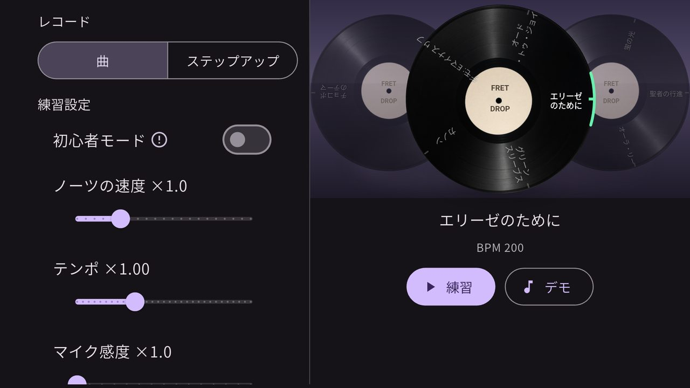
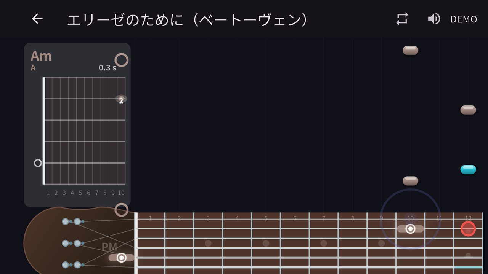
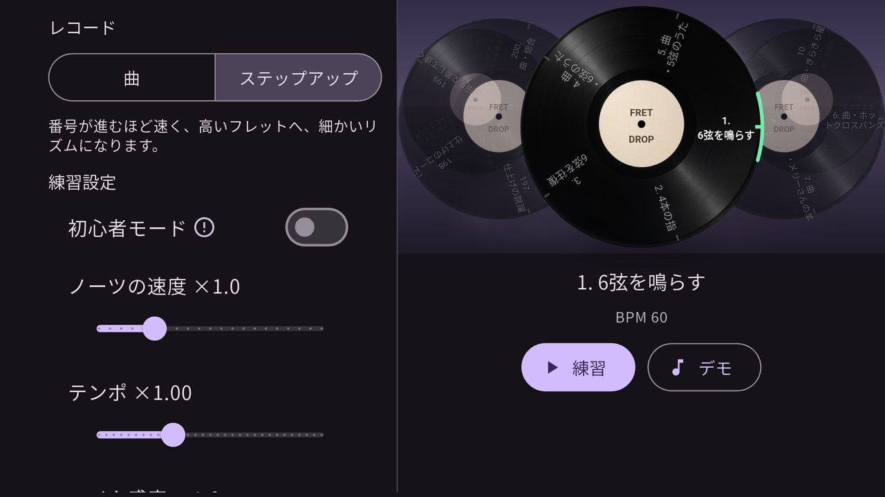
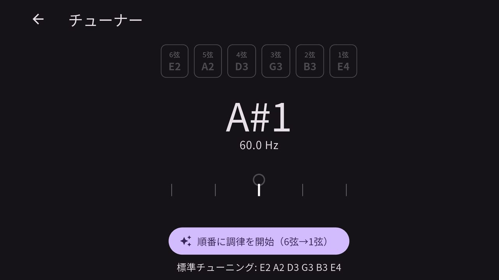

FretDrop
ギター練習
テスト中ギターの練習アプリです。曲やステップアップを選んで弾き、マイクで音程が合っているかを見ます。チューナーもあります。

最初の画面です。「曲」と「ステップアップ」を切り替えられます。レコードを回すと曲名がラベルに出て、いまは「エリーゼのために」、BPM 200 です。「練習」で自分で弾き、「デモ」でお手本を聴きます。左では初心者モード、ノーツの速度、テンポ、マイク感度を決めます。

「練習」を開いた画面です。曲名は「エリーゼのために（ベートーヴェン）」で、右上は DEMO です。右からノーツが落ち、下の指板に押さえるフレットが出ます。左のコード表には Am と 0.3 s とあります。

「ステップアップ」です。画面には「番号が進むほど速く、高いフレットへ、細かいリズムになります。」とあります。いま選んでいる課題は「1. 6弦を鳴らす」、BPM 60 です。

チューナーです。6弦から1弦まで E2、A2、D3、G3、B3、E4 が並び、いま拾っている音は A#1、60.0 Hz です。「順番に調律を開始（6弦→1弦）」で、その順に合わせていきます。下には「標準チューニング: E2 A2 D3 G3 B3 E4」とあります。